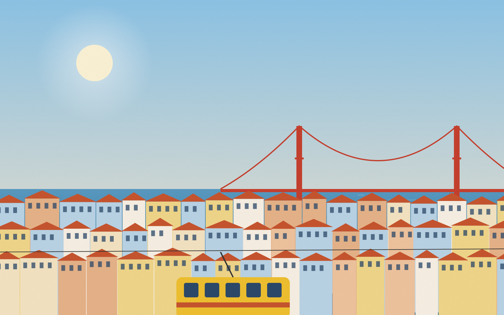

Mais de 30 anos levando você mais longe
Uma agência carioca, no coração do Centro do Rio, que acredita que viajar bem começa por uma boa conversa.
Reconhecida entre as melhores agências do país
Reconhecida como uma das melhores agências de viagens do país, a Cesamar Turismo possui mais de 30 anos de atividade levando clientes a experiências inesquecíveis.
Temos credenciamentos nacionais e internacionais, consultores especializados e oferecemos suporte contínuo durante toda a viagem — do primeiro contato ao retorno para casa.

O que não abrimos mão
Gente antes de sistema
Um consultor que conhece você e acompanha a viagem inteira.
Transparência
O que está incluso, o que não está e quanto custa — antes de você fechar.
Presença
Suporte 24 horas, em qualquer fuso horário, até o seu retorno.
Agência regularizada
Viaje com a segurança de uma empresa registrada nos órgãos oficiais de turismo.
Um café no Centro do Rio
Estamos na Av. Rio Branco, a poucos passos do metrô Largo da Carioca e do VLT. Venha conversar pessoalmente com um consultor.